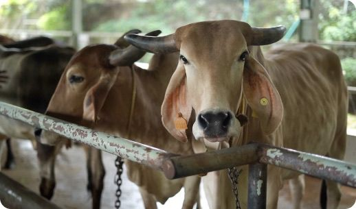

3× the living biology of standard manure — life desert soil is starved of.
Thirst-saving
Holds water in the root zone, so arid beds drink less and grow more.
Traceable
One farm, one herd, one consistent batch — never aggregated.

The herd
400 cows we know by name.
Native Desi cattle, raised on open Kerala pasture. Their dung carries a richer microbial signature than crossbred herds — the quiet reason our fertilizer outperforms in the field.
<12%
Moisture
Cochin
Port of export
Two grades, one harvest
Powdered
Fine-milled · immediate soil integration
NPK
3.5 · 1.5 · 1.5
Moisture
Below 12%
Packing
25kg / 50kg
Cake
Compressed · slow-release nutrition
NPK
3.0 · 1.0 · 1.0
Moisture
Below 15%
Shelf life
12+ months
Bring it to your soil.
Samples, bulk pricing and shipping — a message away.